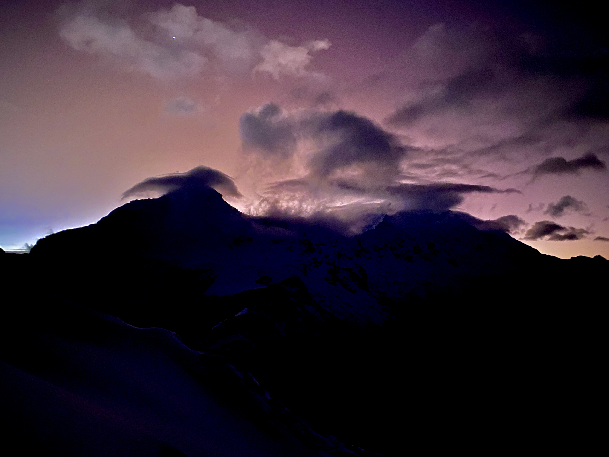

The Blanco Expedition
For those always aiming at higher peaks
In one week time, you will get to know the basics about rock climbing, glacier walking, rappeling and more.
Due to the technicality of the activities, your small group will be always accompanied by a certified mountain guide (justifying the higher price...)
In your first day in Huaraz, you will acclimate with some rock climbing nearby the city Los Olivos, a short hike to test your preparation and preparation of technical gear with our local partners.
A briefing about the chosen expeditions will conclude the day. Please note that due to weather conditions, the proposed itinerary can vary.
2 days and one night, your first glacier expedition.
1 day rest, more rock climbing or chill!
3 days and two nights, yet another glacier!
Mateo
Urus
Ishinca
Vallunaraju
Tocllaraju
Extra info
Gear rent
The price includes all the following. If you prefer to sleep in your own tent or bring your sleeping bag you can, but no discount is applicable.
Food
What is included and whatnot (full meals, snacks, teas, water)
How to get There
You will arrange your own way to reach Lima:
- international Airport "jorge chavez" (tip, check flight connections through Bogota and Panama (Americas) or Madrid/Barcelona (Europe).
- coach stations (norte or ?) by bus
From any of these two coach stations, you will take a night bus ride in one of our top partners. The suite bus will give you a comfortable time throughout the whole journey, with fully reclinable seat, charger and curtains to have your own space. The sunrise light will wake you up arriving in Huaraz.
Accurate GPX tracks